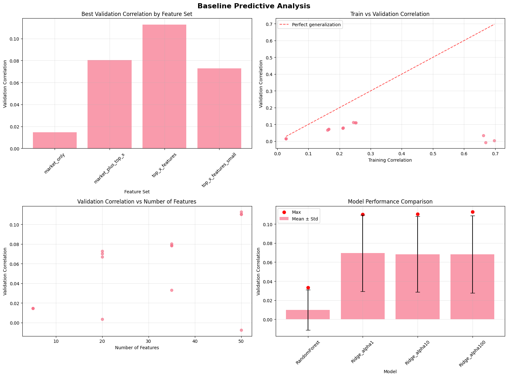
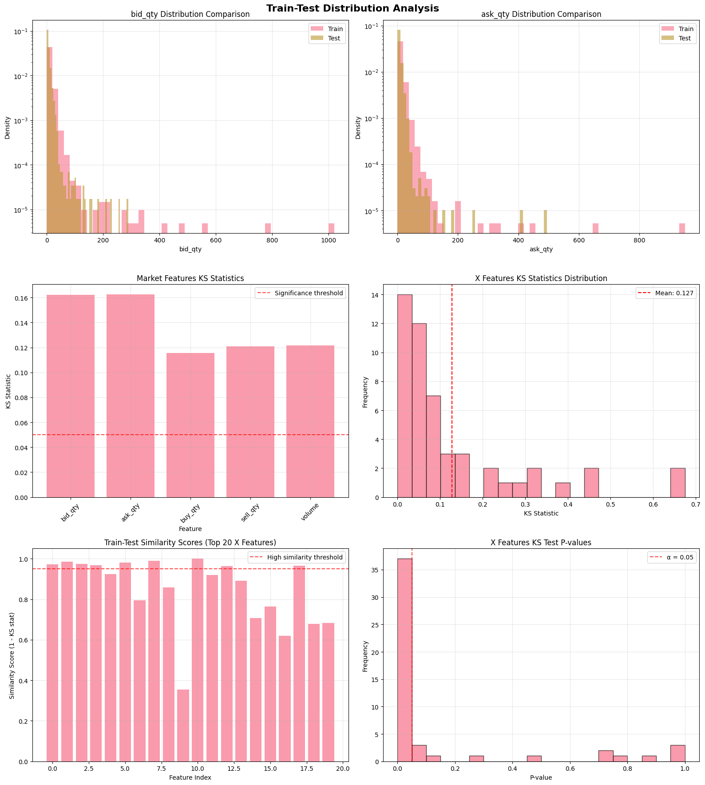
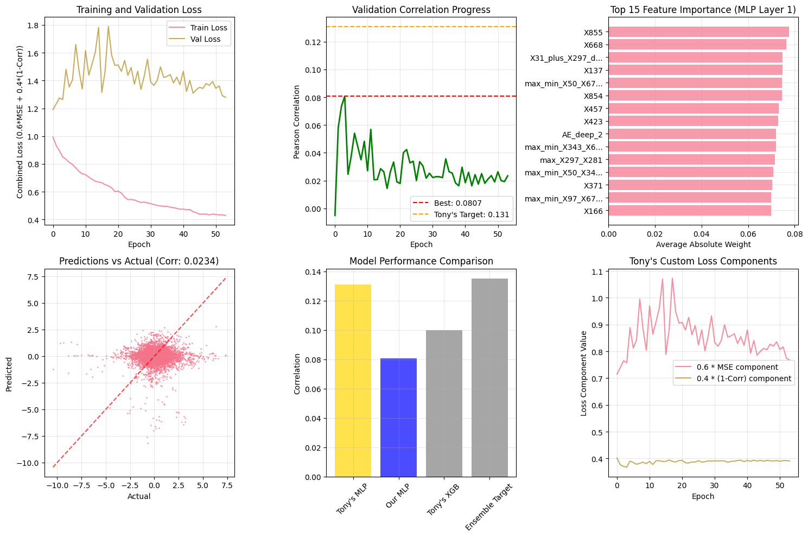
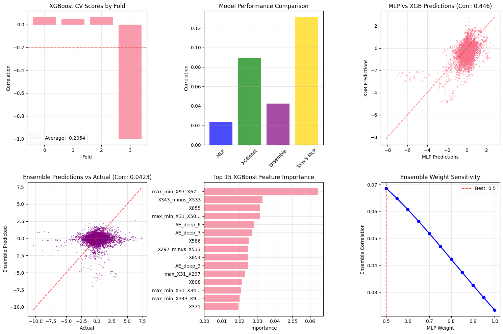

Approach leaderboard
Every validation correlation printed by the notebooks, on one axis. Each notebook uses its own split, so bars are only loosely comparable. Select a bar to see how that number was produced and what weakens it.
Feature set and model explorer
The EDA notebook's baseline experiment: four feature sets and four models on the most recent 30% of the training minutes, split 70/30 in time. Filter to compare, and watch the gap between training and validation correlation. Random forests fit the training window almost perfectly (0.66 to 0.70) and then predict about nothing out of sample.
Feature set
Model
Where the signal is
Absolute-correlation rankings printed by the notebooks. Even the best single feature explains well under 1% of target variance (0.0694 squared is about 0.005), which is why the final models land near 0.1 and why overfitting dominates the story. Choose a list.
Train and test do not look alike
Kolmogorov-Smirnov distance between the training and test distributions, from the EDA notebook. Larger means a bigger shift. All five market columns differ, and the column means differ by roughly a third, so a model tuned on the whole history is being asked to extrapolate.
Distributions matching between train and test: 13 of 50 (26%). Mean KS statistic: 0.1275.
The notebook's recommendation was to train on recent data only and regularise hard. Its own recent-30% experiment is the one above.
Rebuilding the winning pipeline, step by step
The third notebook re-implements the first-place writeup (cluster the features, filter, purged time-series CV, SHAP selection, engineered combinations, an autoencoder, an MLP and an XGBoost blend). Output as printed at each step; it is a partial recreation that underperformed, as the README itself says. Expand a step.
Saved figures
Four of the figures the notebooks saved, unedited. They show aggregates only, not raw rows.




Read this before quoting the numbers
- These are local validation scores, not leaderboard scores. The README sets the 0.1175 beside the winner's 0.131 private leaderboard score and calls it "89.7% of winner performance". Those come from different data and protocols, so that ratio is not meaningful and this page does not use it. The 0.131 appears here only as the figure the third notebook cites for the winner's solution.
- The main notebook's feature selection saw the validation rows. It ranks features by correlation with the target over the whole training set, then splits 80/20. That leaks a little information into the 0.1175, so it is probably optimistic. The README calls the same number "Training Correlation"; it is the validation correlation.
- The rolling-window features were never built. The notebook looked for columns starting with "X_", found none ("Found 0 anonymized features"), and so added only 7 market-ratio features. The 902 features are 895 raw plus those 7, despite the README describing rolling-window engineering.
- The recreation's headline 0.0807 is a best-epoch value. It is the maximum validation correlation over epochs, reached early, and it is used for early stopping on the same validation window. The final MLP scored 0.0234 on that window and the blend 0.0423.
- Some printed averages are degenerate. The recreation's purged CV and XGBoost CV each include a fold with 2 validation rows (correlation exactly 1.0 and -1.0), so the "0.3018" CV mean and the "-0.2054" XGBoost mean are artefacts. They are not charted.
- README and notebook disagree on stationarity. The README says the target is non-stationary; the EDA notebook's ADF test says stationary (p near 0), while also reporting heavy persistence (lag-1 autocorrelation 0.981).
- Feature correlations in the EDA used a sample of 193 of the 890 X columns, which is why its best feature (X20) differs from the main notebook's (X21). The "57.7% success probability" in the EDA is a heuristic score the notebook made up, not a statistical estimate; it is left out here.